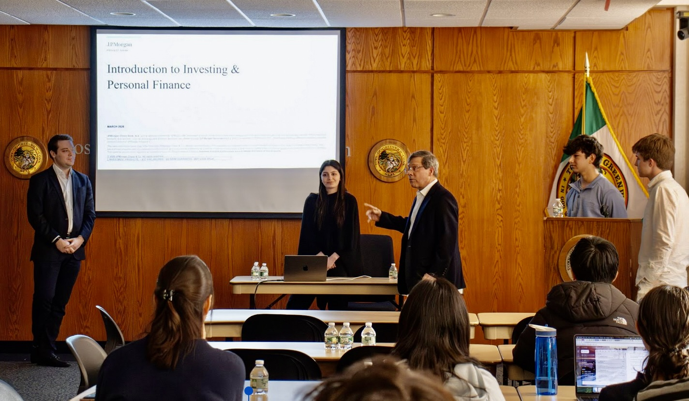

Finance & AI Workshop · Greenwich Town Hall · 2026
Co-organized and led the AI section of the second Greenwich Finance Series event — a student-run financial literacy initiative at Greenwich Town Hall. 40+ students from 9 area high schools attended.

Greenwich Free Press — "Teens Host Finance and AI Workshop at Town Hall" →